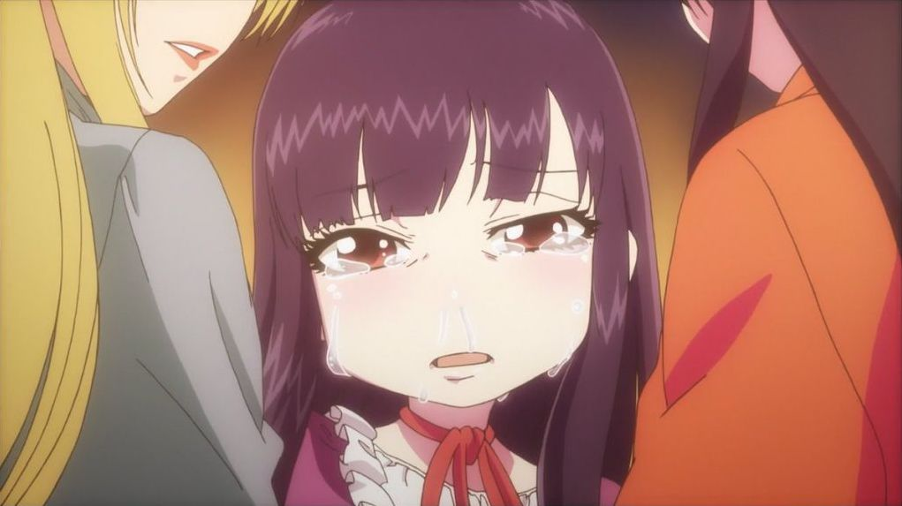
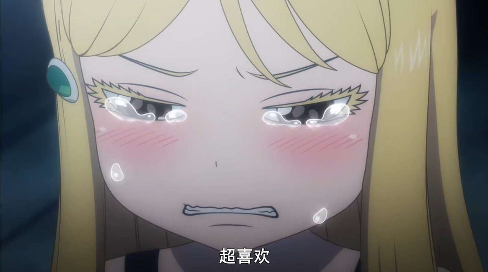

Table of Contents
1 高分少女 动画

这两天看了高分少女。真的超棒！儿时因为游戏产生的缘分，主角给大野灰色的生活带去了色彩。到后面大野一直把主角当作心灵的支撑，一直挂着项链。每次拿出来都直击心灵。到高中时他们一起回忆以前在一起的经历，一起跑出去玩，一起打双人游戏。真的好甜好可爱。大野超可爱！其他配角也一直都在，宫野在初中认识，星星男初中不在，高中又分到一起，这种朋友们一起成长一直在一起的感觉超温馨。他们也都是很可爱的人。
小春在圣诞节的时候开始注意主角，后面慢慢开始喜欢的样子也超可爱啊。“我想在你后面看你玩”超超可爱啊！大野和小春各种小动作都超超超可爱啊啊啊。比如大野一口气吃两个棒棒糖，小春说“没什么”，还有其他很多。小春要拉主角过夜的时候超色情啊，怎么这么可爱，监督和原作都好会啊可恶。主角让小春哭了这么多次真是罪大恶极。
第一季ed描述大野的心情也超可爱的。第二季ed最后那个粗点心屋里他们曾经一起玩的游戏机，真让人感动。
人类美好的情感，来自于现实但现实中难以得到的美好的情感，在动画里一口气给个够。真羡慕动画里的人啊。